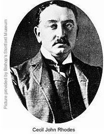

Feducation: Opening The Conspiracy
~
~
Feducation: Opening The Conspiracy

~
“Society cannot exist, unless a controlling power upon will and appetite be placed somewhere; and the less of it there is within, the more there must be without. It is ordained in the eternal constitution of things, that men of intemperate minds cannot be free. Their passions forge their fetters.”
~ Edmund Burke
~
Honorable Madam Chair and Honorable Judiciary Committee, Montana House of Representatives;
In this letter I would like to focus on a deliberate attempt by highly-questionable men to alter the sovereignty and indeed the very soul of America by subverting this nation's educational system. We will note closely the relationship between three prongs of attack, 1) education; 2) the media/press; and 3) the nation's monetary system. To document and justify my statement that the attempt to alter our nation by shaping and controlling government forced education has been deliberate, we only have to read a passage from a member of the Rhodes Round Table "group", P. E. Corbett. His book of 1942 reveals how the elite powers of world opinion saw things:
"It must be recognized that the law of nations takes precedence over national law.... A world association binding together and coordinating regional groupings of states may evolve toward one universal federal government.... The process will have to be assisted by the deletion of the nationalistic material employed in educational textbooks and its replacement by material explaining the benefits of wider association... World government is the ultimate aim, but there is more chance of attaining it by gradual development.... Men ... are looking to ... common economic agencies for advice and control ... An Economic and Financial Organization, embracing Trade, Development, and Migration Commissions, and a Central Bank. The functions of these institutions ... would be to regulate the production and distribution of raw materials and food, control the flow of inter-regional investment and migration, etc."
That prescription for a socialist takeover of America is found on pages 62 and 63 of Dr. Dennis L. Cuddy's Secret Records Revealed: The Men, The Money, & The Methods Behind the New World Order. 1
The Montana legislature has been discussing the interpretation of the term "quality education" for several years, with no ultimate resolve, no final definition, no workable interpretation which may be applied to the duties of the government of Montana as set forth in the Montana constitution. There appears to be two camps, each of which holds an approach which would seem to be in conflict with that of the opposite group. However, both Republican and Democrat camps continue to act as if throwing more money onto the question of "quality education" is somehow what the people of Montana need and want. I would like to offer an idea which is just the reverse of that sort of thinking. I suggest that the state of Montana divorce itself from all Federal funding of education within the state of Montana. Instead of more money, I'm recommending no Federal money be applied to our school systems.
From the quoted passage above, shared with us by Dr. Cuddy, it is apparent that some people in places of leverage and influence are consciously involved in a plan to use the American public education system to further their nefarious goals regarding the assimilation of America into the coming one-world government. But that passage, while comprehensive enough to those who are already aware of this plan, is easily reinforced in much greater detail. Let's unwrap the portrait of that plan now, keeping in mind that all of us are interested in finally defining what a "quality education" might entail. To begin, let us reaffirm what we all may agree is not a quality education.
I shall state right up front that any system of education which directs any student's sense of autonomy, sovereignty, and individuality away from becoming his truest and most personally potential "self" is of course contrary to providing him with a "quality education". Further, I would state that any system of education which attempts to mold the individual student into a compliant servant of any government which would seek to control, modify, monitor, and condition the student to become a breathing property of that government is directly opposed to any meaning which might be ascribed to a "quality education". So let's look at what we may not want to see happen in Montana's state-wide public school system.
In their own publications, and in the writings of scholars who have investigated and studied the history of American education, the National Education Association (NEA) and insightful peers and independent scholars have, each in their opposing perspectives, chronicled the coming to America of forced government schooling. It is a sad saga, but it reveals the how and why of the degradation of modern government schools. Today we harvest what was sown in the past. To illustrate this I shall draw from the NEA's publications, from statements by certain tax-exempt foundations, from UNESCO, and from sharp-minded educators who have published the truth about the NEA and its globalist agenda.
It is of paramount importance to note that the deliberate subversion of the American school system has been accomplished in large part by the use of tax-exempt Foundations. These “Foundations” are spearheaded by the same Houses of international finance which control the American media (via the CFR) and which control the issuance of the American monetary system (via the Federal Reserve System, Inc.). The Foundations and the NEA, the CFR and its ilk, and the Federal Reserve System, Inc., among other platforms and pillars, are interfaced. They interact and are inter-connected or inter-associated. Their direction as a whole is evidenced by their combined histories in American society - and the results of their combined activities.
It is of significance that the same Houses purposefully influence 1: the press; 2: the education system, and 3: the monetary system of America. The press, the education system, and the monetary system are three very important, even crucial, elements in our nation's infrastructure. Each of them influences and shapes the "group mind" as described by Edward Bernays, which we'll look into below. This trilateral yoke of education, the press, and the nation's money issuance, once placed in the control of powerful private-sector elitists such as Ford, Carnegie, Rockefeller, and Morgan, has produced only tyranny. Woodrow Wilson, a man who began to awaken to just how he had been duped by such powers, and only six years after he signed into law the Federal Reserve Act of 1913, said the following in 1919 just before his death:
"I am a most unhappy man. I have unwittingly ruined my country. A great industrial nation is now controlled by its system of credit. We are no longer a government by conviction and the vote of the majority, but a government by the opinion and duress of a small group of dominant men." Woodrow Wilson, 1919.
Feducation As Psychological Terrorism: Assaulting The American Psyche
In 1999 I coined a term which has never left me. I find more occasion to use the term as the years pass and America's public school system continues to reveal misguidance at the highest levels. The term is a word by which I intended to imply the merging or interfacing of the Federal government with the education systems of the nation's children, youth, young adults, and post-graduate students, as well as the public in general. Symbolizing the marriage of Federalism with education, the term I created for that dangerous morph is "Feducation". Centralized Feducation is a particular part of the assault upon America from within, upon which I wish to focus in this letter.
However, we cannot focus upon the subject of public education without also noting parallel processes which are at play. Education is but one prong of the assault upon our way of life as Montanans. As noted above, the press and the Fed's system of economics are two others. Using economic pressures and manipulations in conjunction with media/press activity, those who control what is taught and how it is taught in the public schools are able to influence the public consciousness effectively. While that thesis may not seem acutely problematic at first glance, it is much more deadly than one might think.
Because it is very closely related to Feducation, let us very briefly consider the evolution of the control of the American press before looking at the evolution of forced government schooling. In his opening statement to the secret Bilderberger meeting in Germany, David Rockefeller, perhaps not suspecting that a Swiss delegate at the meeting was taping his address, in 1991 included this spoken acknowledgment:
"We are grateful to the Washington Post, The New York Times, Time magazine, and other great publications whose directors have attended our meetings and respected their promises of discretion for almost forty years....It would have been impossible for us to develop our Plan for the world if we had been subject to the bright lights of publicity during these years. But now the world is more sophisticated and prepared to march toward a world government. The supra national sovereignty of an intellectual elite and world bankers is surely preferable to the national auto-determination practiced in past centuries." ~ David Rockefeller, in a speech to the Bilderberg meeting in Germany in 1991. (Larry Abraham, Insider Report, January 1992, p. 2.)
The most prominent club for the most prominent names who deliver the scripted sound-bites which Americans accept today as 'the news' over television screens is the CFR. It is a club in which we find members of stature such as Barbara Walters, Dan Rather, Walter Cronkite, and etc., as well as the owners of the major media outlets. Anyone who is anyone in the televised news business is a member in the CFR. The CFR, recall, originated in 1921 from the activity of the Rhodes Round Table groups in London and New York. The financial elite of London and the Rothschild European network have influenced American history since the Constitutional Convention, but their focused and concentrated power on American soil convened in a more formalized way during the later years of Cecil Rhodes, who is one of history's largest players operating within the British Empire. Rhodes' powers, financed by the Rothschild dynasty of London and other European financial centers, consolidated the South African gold mines and created the De Beers world-wide diamond syndicate while the House of Rothschild was also financing J. P. Morgan, the Harriman rail-roads, the Carnegie steel empire, and many other American ventures. From exactly those bastions of power came the Council on Foreign Relations, its most immediate and direct source having been the Royal Institute for International Affairs (RIIA) in London. The CFR's roots trace back to the RIIA's roots and the effect of RIIA's influence on the Paris Peace Conference of 1919, through which the ghostly finger of Rhodes wabbles and points the way.
Cecil Rhodes wanted a one-world government operated by the British Empire. He was quite specific about that, insisting upon it in his succession of legal wills. Since he established the Rhodes Scholarship Program and the Rhodes Trust, there is every reason to examine the history of those who've funneled through the Rhodes political and financial and educational conduit. One of the first and primary evidences of Rhodes' will coming into political reality was the doomed effort after WWI to actually create the one-world government. The precursory gentlemen of "The Inquiry" ( _ ) and the Royal Institute of International Affairs (RIIA) would join hands across the Atlantic with Woodrow Wilson's and Colonel Edward Mandel House's "Inquiry" to create the League of Nations.
The League of Nations is the first attempt by these secretive men to establish a world government. It is a part of our history, and has had effects which linger and reside among us today. For example, the question of Israel. For some reason, the state of Israel has the keenest interest in the American government and in the popular perception of the American public. That reason has to do with something the League of Nations did before it lost all power and dried up and went away, to be replaced later by the United Nations (UN) in 1945. The geo-political Players who create such things as a League of Nations and a United Nations are among the most powerful people on earth. Many of them are members in secret societies, (which we have looked into in another letter), and many of them are associated with the subtle remaining powers of the Rhodes Round Table groups. There are several excellent sources which reveal the historic truth about this, including in my esteem among others, 1) Dr. Carroll Quigley; 2) Dr. Dennis L. Cuddy; 3) Antony C. Sutton, 4) James Perloff, and 5) W. Cleon Skousen. With those five my case can be made.
We have learned from Victor Marchetti, former Executive Assistant to the Director of Clandestine Services at the CIA, that the CFR and the CIA conduct secret meetings at the Pratt House in New York. 2
Just why the CIA and the CFR would be involved in secret meetings is related with the shape of today's mass perception by the public at large. Bear in mind that the CIA has been studying mind-control techniques since 1953 when Allen Dulles began the CIA's project "MK-ULTRA". Let us also remember that MK-ULTRA used highly-placed Nazi war criminals who had been brought here by Allen Dulles under the CIA's "Operation Paperclip". We should think about the fact that real, live, Nazi war criminals were put to work under the umbrella of the CIA's MK-ULTRA program of mind-control studies. Because of CIA's network of assets on University and college campuses, the cutting-edge knowledge of American academia was instantly available to the operatives who drove MK-ULTRA. Available to CIA was everything in the fields of science, psychology, pharmacy, communications, journalism, biology, agriculture, cultural anthropology, media, entertainment, education, public relations, and among many other special fields, finance. Additionally, CIA has since its inception been plugged into Wall Street at the fountain-head sources of commercialism and consumerism. The CIA's half-century history is full of men with ties to the Rhodes Round Table groups, its subsidiaries, and with ties to secret societies. No other agency of government knows as much about manipulating the public perception. Although I've looked into this more closely in other letters, I mention this briefly here because the CIA has a history of involvement with the CFR, and that history includes secret meetings. That history also reveals the steps taken through the decades of the twentieth century, and some students of the New World Order have taken time to document much of the controlled march toward globalism.
For example, Dr. Dennis L. Cuddy, Ph.D., quoted this observation by Rush Limbaugh in one of his essays:
“Popular national radio talk-show host Rush Limbaugh repeatedly refers to anyone who believes in a one-world government conspiracy involving the Council on Foreign Relations (CFR) as a "kook." However, on his February 7, 1995 program, he remarked: "You see, if you amount to anything in Washington these days, it is because you have been plucked or handpicked from an Ivy League school – Harvard, Yale, Kennedy School of Government – you've shown an aptitude to be a good Ivy League type, and so you're plucked so to speak, and you are assigned success. You are assigned a certain role in government somewhere, and then your success is monitored and tracked, and you go where the pluckers and the handpickers can put you." ~ ( http://newswithviews.com/Cuddy/dennis2.htm )
That is a pretty good, if generalized, accounting for "how it's done". Let us now look into how things came to be this way.
~
We have already noted the Anglo-American establishment's licentious involvement in the earlier years of the Ivy League campuses during the 1800s. But in 1905 the Carnegie Foundation for the Advancement of Teaching (CFAT) was created.
We should ask: Why?
It is very important that we ask why the Carnegie Foundation for the Advancement of Teaching (CFAT) was created. Was Mr. Carnegie elected to public office? Did he hold a tax-paid job which required him to affect or influence this nation's teachers and educational system? Or was he merely an interested individual from the private sector who held a personal motive, and the financial power, to tinker with this nation's education system? That the Foundation was created certainly indicates the presence in his mind of a motive, does it not? He spent a lot of money and personal energy creating and running it.
So I wonder: Upon what authority did Carnegie create the Carnegie Foundation for the Advancement of Teaching? Wasn't it of his own volition? Did the people's representative federal government ask him to do it? Was he elected? Did the people ask him to do it? I do not think so. Did he do it because he wanted to; and did he do it because no law forbade him; and did he do it for some personal advantage? Also, we must ask whether we might surmise that Carnegie created CFAT to assist in the fulfillment of some secret objective by the Rhodes Round Table groups.
If the government did not ask Mr. Carnegie and associates to create it, did not the government at least grant CFAT a legal charter as a tax-exempt Foundation? Yes, of course it did. But when the government granted Carnegie a tax-exempt status and licensed his enterprise, did the government not thereby acknowledge a complicity between government and private-sector interests? How were the people represented in that governmental/private-sector complicity? Were the people represented? Was false publicity, in any way, used to satisfy the public curiosity and any questions?
Is today's mechanization and socialization of Feducation the offspring of something that flippant - the creation of a legal fiction called a tax-exempt Foundation? When we think about it, we see that to a large degree that is so. But worse, we also come in time to see that CFAT has somehow managed to influence the National Education Association (NEA) - and we already know that the NEA influences the content of government school textbooks.
Was Carnegie not using the laws of our government, i.e., corporate-related and tax-exemption laws and etc., as tools by which he intended to enforce his will - his motive - concerning how, and what, entire generations of Americans would be taught? Where is the accountability of the Carnegie Foundation for the Advancement of Teaching to the American people? Does any accountability exist? Does it matter? Does the power to govern and control the content of public school text books have an impact on the mass mind of America after nearly a century of such manipulation? Does that matter? If that control is in private hands and is used for a private-sourced agenda, it certainly matters.
In 1919 the Institute of International Education was established with a grant from the Carnegie Endowment for International Peace.
Why?
Why did Carnegie and his circle of friends suppose they should play a hand in directing the education of the world? What conceit caused them to feel they had any moral authority to do so?
Looking into the history and accomplishments of the tax-exempt foundations, we come to see why they were created. In doing that we closely look at their fruits, at their accomplishments, at their deeds and at their stated intent. While I am not an authority on education, there are a number of highly qualified authorities on education who furnish a striking assessment of a deliberately-engineered decay, demise, and degradation within the government schools today. An example which backs up my statement is offered by John Taylor Gatto in his book The Underground History of American Education. 6
In 1982, Anthony Oettinger, a member of the private discussion group called The Council On Foreign Relations, asked an audience of communications executives this question: "Do we really have to have everybody literate -- writing and reading in the traditional sense -- when we have means through our technology to achieve a new flowering of oral communication?" Eighty-three years earlier John Dewey had written in "The Primary-Education Fetich" (spelling is Dewey's) that "the plea for the predominance of learning to read in early school life because of the great importance attaching to literature seems to be a perversion." (page 61)
Edward R. Murrow became the Assistant Director of the Institute of International Education and John Dewey served on its National Advisory Council. In their examples we see individuals from the private sector displaying a keen interest in what their good neighbors might perceive, think, learn, know, and understand. They obviously wanted to affect teaching and learning in America and, ultimately, internationally.
Why?
Should I not presume that there had to be an intent, a motive, underlying such concentrated efforts? This from Gatto, in prologue to his book:
[John]
Dewey’s Pedagogic Creed statement of 1897 gives you a clue to the
zeitgeist:
"Every teacher should realize he is a social servant set apart for the
maintenance of the proper social order and the securing of the right social
growth. In this way the teacher is always the prophet of the true God and the
usherer in of the true kingdom of heaven."
As a Montanan and as an American, how might I compare that blurb to this missive on behalf of nationalist socialism by Adolf Hitler?
"It is thus necessary that the individual should finally come to realize that his own ego is of no importance in comparison with the existence of his nation; that the position of the individual ego is conditioned solely by the interests of the nation as a whole ... that above all the unity of a nation's spirit and will are worth far more than the freedom of the spirit and will of an individual..." 3 (page 13)
Hitler was of course pulling the German people's collective leg. He played the much-precedented old trick called a "switcharoo". By that I mean to say that he directed the individual's allegiance to the state - to the German government - instead of to himself, his family, his neighbors and their lands. Hitler was misdirecting their allegiance to the government instead. There is a vast difference between a nation and its system of government. A nation and its government are two separate things, just as a church and its members are two different things. The people and their land comprise the nation; while the government is merely the vehicle, created by the people, by which they intend to drive their common affairs. Government is a mechanism, but people are a nation. Allegiance to one's people and to the common lands of one's nation is a proper application of one's sense of "nationalism". Allegiance to one's government is at best merely a misplaced legitimacy which the people may extend to or withdraw from their government at any time. The Declaration of Independence ties that down very neatly - it's our heritage as Americans.
But much confusion has come about since the founders initiated the Federal government with its Constitution. That confusion within the public mind has been engineered there by the very same verbiage as Hitler used in the above quoted passage. Inter-nationalist socialism, an expansion on Hitler's ideology, is the motive behind the activities of the National Education Association (NEA). It also hides darkly behind the activities of the CFR and ilk. It also hides behind the secret activities of the descendants of the Rhodes Round Table Groups. The Western powers' Intelligence community, including the CIA, British Intelligence (MI-5&6), the former KGB, the Pakistani ISI and Israel's Mossad for examples, provide services to such cliques within the Rhodes-styled modern cabal. They do this as far away from the lights of media/press exposure as they can, but history and their own records, biographies, and etc. reveal their deeds.
~
I sometimes muse to myself that it would not be an error for me to associate several 19th Century ingredients which went into today's societal soup: Darwin, Freud, and Marx chief among them. From each of those contributors we find specific ingredients which flavor our perception, largely because the tax-exempt Foundations have promoted their three respective views by funding private-sector think tanks like the CFR and the NEA, the Aspen Institute and the American Historical Association, and many others. The great tax-exempt Foundations encouraged the "scientific" philosophies of men like Darwin, Freud, and Marx, and have used the influences of those sorts of organizations to lever Darwinism, Freudianism, and Marxism into the perception of American governance. Those pools of progressive thought came to the world at approximately the same era which bore the Industrial Revolution, and continued into the Age of Enlightenment with much endorsement by the heirs of the Rhodes plan for a Federated world government in the name of the British Empire.
The great Foundations found help with that program in the very European banking circles which helped finance the American version of the Industrial Revolution - the financial powers of Europe which extended across the Atlantic to assist people like Harriman, Rockefeller, Carnegie and J.P. Morgan, who in turn assisted people like Hearst, Vanderbilt, DuPont, et al. The driving power which developed the marketing in the United States of the Industrial Revolution originated in Europe. It has always been expected that a return on their long-standing investments in America would some day be demanded. Rothschild, Schiff, Warburg, Kuhn-Loeb and other European financial Houses of power hold very deep and active leverages behind the major players on Wall Street, as we shall see, and Wall Street makes use of powerful leverages in American government-forced education.
As unlikely as this might seem at first, the banking powers of globalism are also demonstrably associated with the eruption in the world of a widely-spread blanket of seemingly spontaneous terrorism. I am attempting here to establish, or at least to plausibly suggest, that this association is a worthy template over which to overlay my understanding of state-sponsored terrorism. (False-flag terrorism) Once this is seen, the anomalies which infest the government's story [official conspiracy theory] about the Oklahoma City bombing of 04/19/95 and the attacks of 9/11/01 suddenly take on a much greater import.
Some simplification
The tax-exempt Carnegie foundations were not, and are not to this day, legitimate agencies of the U.S. Federal government. They do, however, fit the description of “private-sector special interests”. As such they lobby and seek leverage and influence in governmental policy-making. They spend fortunes on their projects. They possess a motive to do that. What could that motive be? Might even an uneducated common man such as myself come finally to see it?
By having the U.S. federal government's backing as “legal fictions”, i.e., as creations of law, i.e., as tax-exempt corporations, the tax-exempt Foundations appear to carry the weight and authority of official interaction and official inter-relationship with our federal government. Thusly today we see an oblique and unquestioning public acceptance of these powerful tax-exempt Foundations. Americans in general simply do not question the origin, purpose, and impact of such tax-exempt Foundations upon our lives. Neither the government nor the main-stream media nor the press bother to inform the public about this. Instead of questioning the tax-exempt Foundations, Americans for the most part have been conditioned to stand in awe of the wealth and power behind the Foundations, and consequently those Foundations presume that the people do not object to their presence – or to their activities. But their activities remain largely unheralded and the public-at-large has little idea about the motives behind these private-sector giants who have literally built the government-forced public school system, this nation's press, and this nation's monetary system.
We see today that the powerful tax-exempt Foundations have been responsible for much levering of governmental domestic Policy and even, as in the cases of the CFR, Rand Corporation, the PNAC, and ilk, much foreign Policy.
Just as the PNAC and the CFR, the Rand Corporation and the Trilateral Commission have no authority over the citizens of the United States of America, but are instead private-sector “think tanks” which seek to influence U.S. official Policy so that their interests may use the authority of government to exert their power over the American people, so too the Carnegie, Ford, Rockefeller, Morgan, and other similar tax-exempt Foundations are without authority over Americans. But yet, each tax-exempt Foundation seeks diligently to gain some sort of power over us. Indeed, just what you and I and our good neighbors think seems to be of great interest to such powers. Perhaps the use of such powers by the monopoly-capitalists should be questioned by the people whom those powers have affected. Thanks to Alex Jones 1, I learned of the work of Edward Bernays.
The following excerpts are from the book Propaganda by Edward Bernays. 2
"The conscious and intelligent manipulation of the organized habits and opinions of the masses is an important element in democratic society. Those who manipulate this unseen mechanism of society constitute an invisible government which is the true ruling power of our country. We are governed, our minds molded, our tastes formed, our ideas suggested, largely by men we have never heard of. This is a logical result of the way in which our democratic society is organized. Vast numbers of human beings must cooperate in this manner if they are to live together as a smoothly functioning society." (page 36)
"The systematic study of mass psychology revealed to students the potentialities of invisible government of society by manipulation of the motives which actuate man in the group. Trotter and Le Bon, who approached the subject in a scientific manner, and Graham Wallas, Walter Lippmann, and others who continued with searching studies of the group mind, established that the group has mental characteristics distinct from those of the individual, and is motivated by impulses and emotions which cannot be explained on the basis of what we know of individual psychology. So the question naturally arose: If we understand the mechanism and motives of the group mind, is it not possible to control and regiment the masses according to our will without their knowing about it?" (page 71)
These two passages from Bernays' book, entitled Propaganda, published in 1928, indicate clearly an insider's perception of a vast and newly-emerging science based on such observations in the early 1900s. I call Bernays an "insider" because of numerous facts. One interesting fact to note here is that Edward Bernays was a nephew of Sigmund Freud. Another interesting fact is that he was born in Austria. And another interesting fact is that Bernays became known to many as the 'father of public relations'. His insightful vision, regarding the nature of the mass mind, Freudian as it was, channeled itself into his life-work. He was a pioneer in the corporate and governmental fields of public relations. He was a darling of Wall Street. In Propaganda Bernays published a public-relations secret: The hypothesis is that the mass-mind (group mind) behaves differently than the individual mind, and can be manipulated differently than may an individual's mind. Bernays' insights were important to the creators of the tax-exempt Foundations. Let us look at the latter quoted sentence from that passage above:
"If we understand the mechanism and motives of the group mind, is it not possible to control and regiment the masses according to our will without their knowing about it?"
We today must ask, in the wake of a public relations industry/mechanism revolution so many decades ago, just what sort of power in the minds of what kind of men would pose the question of manipulating the public consciousness - without letting we the people know we were being manipulated? Why would Bernays, the father of public relations, suggest to the financial powers of Wall Street a new methodology, an emerging science of mind control en masse, to "control and regiment the masses according to our will without their knowing about it?" While that should be dwelt upon very seriously, we note that Bernays also said this:
The modern publicity director of a theater syndicate or a motion picture trust is a business man, responsible for the security of tens or hundreds of millions of dollars of invested capital. He cannot afford to be a stunt artist or a freelance adventurer in publicity. He must know his public accurately and modify its thoughts and actions by means of the methods which the amusement world has learned from its old pupil, big business. As public knowledge increases and public taste improves, business must be ready to meet them halfway. (page107 - and remember, this was published in 1928.)
Was that the precursor of the "preferred customer discount cards" at our grocery stores today? Could that have anything to do with the advent of the RFID chip which has been experimented with by Gillette and Wal-Mart? And could that have anything to do with the fact that in May of 2008 all Montanans and Americans everywhere shall be forced to accept a national ID card in which has been planted an individualized RFID chip? (RFID: radio frequency identifier; your national ID card will transmit signals to many points in the coming police-state data grid.)
Bernays worked for several U.S. Presidents as a consultant and/or adviser. He worked for General Electric, United Fruit, Dodge Motors, and many other Wall Street corporations. He worked for the U.S. Army. His perception was praised by Josef Goebbels in 1930s Germany and was incorporated into the Nazi propaganda machinery. His vision was, amazingly, embraced by Wall Street, the White House, and the Third Reich under Adolf Hitler. This is known history. Students of the life of Adolf Hitler during the 1920s and 1930s will readily grasp the significance of the Nazi Party's usage of Bernays' mass-mind orienting principles. Deciding to manipulate the mass German mind by use of esoteric and occult teutonic traditions coupled with a swiftly developing mass manipulation science as led by Bernays and other Wall Street public-relations powers, the damning trio of Hitler, Goebbels, and Himmler persuaded the German people to give up their personal liberty in the name of the Reich, the "New Germany". They called it: Nationalist Socialism. The concept of nationalist socialism, when considered even briefly, lends a new tone to this statement by the President of the United States of America:
"You're either with us, or you're with the terrorists." ~ George Walker Bush, 2001
Because of the Freudian influence and the new thought provoked by Charles Darwin's Origin Of The Species, which led indirectly if not directly to the Eugenics movement in England, America, and Germany, and in no small way influenced by the decimation encountered in the Treaty of Versailles at the hands of the Rhodes Round Table appointees, mass propaganda programs in Germany were organized by the man who said the following:
"This state of mind, which subordinates the interests of the ego to the conservation of the community, is really the first premise for every truly human culture... The basic attitude from which such activity arises, we call -- to distinguish it from egoism and selfishness -- idealism. By this we understand only the individual's capacity to make sacrifices for the community, for his fellow men."
The statement was made by Adolf Hitler. I found it in Leonard Peikoff's The Ominous Parallels 3 (More specifics on the rise of nationalist socialism in Germany, the occult roots of Hitler's and Himmler's public relations projects, are discussed in another letter entitled Beyond Conscience - The Elite Faces of the New World Order.)
~
The Rhodes Scholarship Fund And The Rhodes Round Table
In the autumn of 1890 Cecil Rhodes sent a letter to his close friend W. T. Stead regarding his plan:
"The key to my idea discussed with you is a Society, copied from the Jesuits as to organization ... an idea which ultimately (will lead) to the cessation of all wars and one language throughout the world... The only thing feasible to carry this idea out is a secret one gradually absorbing the wealth of the world to be devoted to such an object ... Fancy the charm to young America ... to share in a scheme to take the government of the whole world!"
That is found on page 13 in Dr. Dennis L. Cuddy's Secret Records Revealed: The Men, The Money, & The Methods Behind The New World Order. ( ? Cuddy's book, Secret Records Revealed ) It is followed by this statement by Dr. Cuddy:
"Rhodes' 'universal peace' would begin, according to him, 'after one hundred years', and it will be exactly one hundred years later in the autumn of 1990 that President George Bush will spell out his 'New World Order' concept for universal peace and cooperation. The contents of Rhodes' letter will be published in W. T. Stead's article in Review of Reviews (May 1902) ..."
The only empowerment which the tax-exempt Foundations possess aside from their obvious financial powers resides in public acceptance of and belief in their organizations, coupled with a public permissiveness which allows those foundations and their bankers to lobby our government offices. The needed acceptance and belief are given to such organizations by we the people ourselves. But we must ask: Is our acceptance and belief rendered from a fully-informed perspective, or is it blindly given over in the same manner in which the German people surrendered their personal sovereignty to the Nazi government - because we unconsciously trust the greatest monopolists of wealth with our childlike sense of awe? Informed consent is one thing, but mis-informed consent may not be valid consent. It may be something else.
Something is, and has been for a long time, afoot in America at the highest levels of finance and government. A major part in it was planned in great detail by Sir Cecil Rhodes and has been carried out by a devoted cabal of numerous men who believe(d) in Rhodes' plan for a one-world government. Some of the greatest names in world history have been involved. By the end of the 1960s the secret society created by Rhodes in the late 1800s would be so deeply entrenched in London and American government and finance that the Round Table groups no longer feared exposure of their plan. At that time it was seen, perhaps correctly, that even if the plan suffered exposure to public scrutiny, the people themselves would not be able to successfully oppose it or stop it. A famous socialist named H. G. Wells put it this way in 1935:
"This gives us a large portion of the existing civilized world in which men's minds may be readjusted to the idea that their existing governments are in the position of trustees for the greater government of the coming age. Throughout these communities it is conceivable that the structural lines of the world community may be materialized and established with only minor struggles, local boycotts, vigorous public controversies, normal legislative obstruction, social pressure, and overt political activities. Police, jail, expulsions, and so forth, let alone outlawry and warfare, may scarcely be brought into this struggle upon the high civilized level of the Atlantic communities. But where they are brought in, the Open Conspiracy, to the best of its ability and the full extent of its resources, must become a fighting force and organize itself upon resistant lines." ( _ footnote here The Open Conspiracy)
(I now ask one chilling question: Could this be a part of what lies hidden behind the phenomenon called "Continuity of Government" (COG)? Would a runaway, berserk government which was knowingly operating outside the limits placed on it by its founding legal charter voluntarily relinquish any degree of control over its subjects? If this is even possibly a just scenario for what has happened in Washington DC over the last nine or ten decades, would we not full-well expect the culprits to devise ways to protect the stolen power of government from an awakening public? Wouldn't COG serve to that end, just as it exists today, without changing hardly any of its procedures or methods? Now that we have a mental template which provides an overview perspective on a history which has largely been suppressed we can certainly envision this hypothesis as potentially possible.)
Some distance later on page 89 of Cuddy's book comes this optimistic prediction by Wells:
"The whole psychology of industry and industrial relationship needs to be revised and restated in terms of the collective efficiency and welfare of mankind. And just as far as can be contrived, the counsel and the confidences of those who now direct great industrial and financial operations will be invoked. The first special task of a banker, or a bank clerk for that matter, who joins the Open Conspiracy, will be to answer the questions: "What is a bank?" "What are you going to do about it?" "What have we to do about it?" The first questions to a manufacturer will be: "What are you making and why?" and "What are you and we to do about it?" Instead of the crude proposals to "expropriate" and "take over by the State" of the primitive socialism, the Open Conspiracy will build up an encyclopaedic conception of the modern economic complex as a labyrinthine pseudo-system progressively eliminating waste and working its way along multitudinous channels towards unity, towards clarity of purpose and method, towards abundant productivity and efficient social service."
Both of those comments were published in H. G. Wells' 1928 book, The Open Conspiracy: Blueprints For A World Revolution. ( _ footnote for the Open Conspiracy )
An excellent example of public misconception regarding powerful men who would subvert this nation lies in the reaction commonly given when it is announced that someone's son is selected to be a “Rhodes Scholar”. Until one knows the ugly truth which lies behind the Rhodes Scholarship Fund, one feels honored to be selected as a Rhodes Scholar. Our society has been engineered so as to cause us to see it that way. Many a bright brain has never re-awakened from that sordid dream-state illusion -- the Rhodes/British Empire global power quest. The average American today views the Rhodes Scholarship award as an enviable bestowal of prestigious acclaim and assured success. University life and one's future become arranged, just as alluded by Rush Limbaugh above. One's friends now expect “the best” of one. One's future is assured. If a Rhodes Scholar were to come to his senses and back out of the program, one's family would never understand, and anything less than fulfillment would be seen as an embarrassment. Americans never seem to question what is behind the Rhodes Scholarship program.
Deep inside the Rhodes Scholarship Fund, at the core of it, lies a reality which is almost too bizarre to explain. The American public, unquestioning and docile, has little idea that the vision of Cecil Rhodes included the return to the British Empire of that stolen property known as the United States. [my paraphrase - Cecil Rhodes' will-and-testament of 1878 is included in the Addendum to this collection of letters.]
The Rhodes Scholarship Fund is a bastion of socialism and globalism which trains bright students for roles in the establishment of the one-world government, as we shall see below. The fund was created to help the British Empire reassert control over, among others, its lost colonies in North America, if not geo-physically, at least economically. Yet, precisely because they do not know what lies behind Rhodes and his grand plan for America and the world, Americans see a Rhodes Scholarship as a highlight in anyone's education. The fact that most Americans think it is an honor to receive the award only demonstrates the effectiveness of the globalists' program as it functions inside American Feducation. This phenomenon is an accurate and valid association with Bernay's comments above about the "group mind". Affecting the "group mind" has served the Rhodes Scholarship program grandly. Most Americans, at least, the ones who do not yet understand the New World Order's plan, embrace with awe, belief and acceptance the very sword thrust at the heart of American independence.
Cecil Rhodes, correctly called Sir Cecil Rhodes and Lord Cecil Rhodes, was financed by the House of Rothschild as Rhodes, in the mid-to-later 1800s, consolidated the gold mines of South Africa and created the global diamond syndicate named De Beers. The House of Rothschild has profited handsomely ever since Rhodes worked his will in South Africa, dominating the world's gold and diamond exchanges. Rhodes himself was powerful enough to have a nation-state in Africa named for him - Rhodesia. But his most powerful venture of all was the creation of the Rhodes Trust, the Rhodes Scholarship Fund, and the Rhodes Round Table group. When William Jefferson Clinton graduated from Georgetown University in 1968 he had been awarded a Rhodes Scholarship. This had been recommended by Professor Carroll Quigley and U.S. Senator Fulbright. Although I am told that Clinton never actually completed his Rhodes Scholarship requirements, Clinton did enter studies as a Rhodes Scholar, at Oxford, England - the home of Fabian socialism and the Round Table groups of Cecil Rhodes.
On February 05, 1891, the Rhodes secret society was formed. It was named the "Society of the Elect". The executive committee consisted of Rhodes, Lord Alfred Milner, W.T. Stead, and Reginald Baliol Brett (Lord Escher). Their followers were dubbed "The Circle of Initiates", and the Circle of Initiates comprised the first ring (or circle) outside the executive committee. Another larger circle was established which surrounded and encompassed the first two circles of power, and that circle was called the "Association of Helpers". Lord Milner would later organize the Association of Helpers into the Round Table Groups.
.In 1902 The Last Will And Testament of Cecil Rhodes was published by W. T. Stead. According to Dr. Cuddy, ( _ page 17), between 1902 and 1910 "Various branches of the Carnegie Trust (e.g., Carnegie Foundation, Carnegie Endowment for International Peace, etc.) are established. The [Rhodes Round Table] Group is very close to banker J. P. Morgan, who has a strong influence on branches of the Carnegie Trust. Andrew Carnegie has been very sympathetic to Rhodes' plan. In 1902 Daniel Coit Gilman becomes the first president of the Carnegie Institution of Washington, D.C. He is a member of the Skull and Bones society, ... and in 1898 [had] invited Fabian Socialists Beatrice and Sidney Webb to address the faculty of Johns Hopkins University where he was president. There, he had hired G. Stanley Hall, who became the mentor of John Dewey ("Father of Progressive Education", a founder of the Intercollegiate Socialist Society, and co-author of the first Humanist Manifesto in 1933). In 1904, the Carnegie Institution, with Gilman as president, finances the establishment of a biological experiment station related to eugenics at Cold Spring Harbor, New York."
Dr. Cuddy continues on page 18:
In the 1990s Dr. [James D.] Watson will be president of Cold Spring Harbor Laboratory and will work on the Human Genome Project to map out all the human genes.... In 1909, the Carnegie-published document, "Cecil Rhodes and His Scholars As Factors in International Conciliation" is released. It is written by the first Oxford Secretary to the Rhodes Trust, Francis Wylie, who suggests that to develop "so great a power as to hereafter render wars impossible," a [secret] society be formed "to this end" and, "co-extensive with the British Empire, preaching imperial ideas, and effecting its objectives through the control of education. He goes on to say that the objectives should be achieved in an "unobtrusive" manner, with influence "as subtle as it is leisurely".
At risk of wearing out my welcome with Dr. Cuddy's amazing book, please allow me to share one more passage from pages 20-21:
Robert Hugh Benson (born 1871) is the son of the Archbishop of Canterbury, Edward White Benson, who in 1883 married Mary Sidgwick. She is the sister of Professor Henry Sidgwick (would be Bertrand Russell's tutor), a founder of the Society for Psychical Research (SPR) along with future British prime minister Arthur Balfour (one of Cecil Rhodes' "Circle of Initiates"). John Ruskin, who inspired Cecil Rhodes, was an SPR member, as were Fabian Socialist founders Frank Podmore and Edward Pease. Another member of the SPR has been Prime Minister William Gladstone, who is a member of "The Cecil Bloc", identified by Professor Carroll Quigley as the political influence behind Lord Alfred Milner's furtherance of Cecil Rhodes' plan for world dominion. Other members of "The Cecil Bloc" include Prime Minister Balfour, author Rudyard Kipling, and Lord Alfred Tennyson (SPR member) who had written "Locksley Hall" (1842), which called for "the parliament of man in the Federation of the world." President Harry Truman will carry this part of the poem with him in his pocket, explaining, "that's what I've been working for."
Note aside - we also may recall that Allen Dulles kept a copy of Kipling's Kim on his nightstand throughout his life.
Americans are very busy people these days, too busy in fact, and too distracted it seems, to bother with their duties untoward vigilance. Americans generally do not question those forces which would shape their world, preferring to leave that up to our social institutions and governmental institutions. An old catch-phrase on that goes like this: "What's good for GM is good for America". Most Americans seem to feel that all would be well, "if those damned terrorists would just leave us alone”. The fact that unscrupulous people at the top of the money-chain would be deliberately creating the terrorism as the pretext for taking the public's liberties and promoting a global empire seems far beyond the average American's grasp - at present.
The fact that the co-conspirators who created the Federal Reserve chose for their venture's name the misleading words “Federal” and “Reserve” is a primary example of the use of selective and connotative wording to gain popular support for private adventures. Indeed the Federal Reserve is not Federal, and its “reserves” are very questionable 4, for the Federal Reserve refuses to allow an audit of the institution. Thus, the naming of the Federal Reserve System as such was a deliberate choice, a ploy aimed at distorting public perception, a decision which Paul Warburg asserted after the bank bill failed to initially pass Congress under its original title, the “Aldridge Bill”. That sort of mass programming is enhanced greatly by educating the masses to perceive the intended image. I mention this to illustrate the character, nature, and tactic of powerful men who proactively seek to gain control over America - from within - by manipulating what Bernays called "the group mind". I would suggest that there exist very few more direct links to the "group mind" than that found in the infrastructure known as "public schools". This fact was foreseen more than a century ago by the great coal powers who created the foundations in both private sector and governmental arenas.
Another example which reveals the psychological predisposition of the great monopoly-capitalists who captured American education and converted it into Feducation is seen when we recall that the Carnegie Foundation For International Peace (CFIP) helped fund Trotsky and Lenin in the Bolshevik Revolution. Thanks to the published works of Antony C. Sutton 5, we now know that Carnegie sent six million dollars in 1917 to Trotsky, and that the banking House of Schiff in Europe sent an additional twenty million. In another letter we shall look into why American monopoly-capitalists would deliberately help create the world's first communist state, and we shall come to understand that the internationalist financial mercenaries saw viable motive for establishing a communist Empire (the USSR) which would sustain a perceived conflict between capitalism in the West and communism in East Europe.
I realize that such a statement by myself seems startling, even impossible. What is necessary here, however, is simply to note that tax-exempt Foundations such as Ford, Carnegie, Rockefeller, and Morgan were not just involved in American education, but were also involved in U.S. foreign policy, in the issuance of this nation's monetary system through the Federal Reserve, in the formation of the American Medical Association's health-care industry (especially the giant pharmaceutical industries), in the funding of the American Historical Association, and in the CFR-dominated media and press which drums the tempo of public thought and mass-mind perception. Those same Foundations were deeply involved in the Eugenics science of the early 1900s, and have a finger on today's "genome race".
For some mileage on that subject we turn again to a winner of the New York City and the New York State "Teacher of the Year" awards, John Taylor Gatto.
It took several years of reading and reflection for me to finally figure out that mass schooling of the young by force was a creation of the four great coal powers of the nineteenth century. It was under my nose, of course, but for years I avoided seeing what was there because no one else seemed to notice. Forced schooling arose from the new logic of the Industrial Age -- the logic imposed on flesh and blood by fossil fuel and high-speed machinery.
This simple reality is hidden from view by early philosophical and theological anticipations of mass schooling in various writings about social order and human nature. But you shouldn't be fooled any more than Charles Francis Adams was fooled when he observed in 1880 that what was being cooked up for kids unlucky enough to be snared by the newly proposed institutional school net combined characteristics of the cotton mill and the railroad with those of a state prison.
After the Civil War, utopian speculative analysis regarding isolation of children in custodial compounds where they could be subjected to deliberate molding routines, began to be discussed seriously by the Northeastern policy elites of business, government, and university life. These discussions were inspired by a growing realization that the productive potential of machinery driven by coal was limitless. Railroad development made possible by coal and startling new inventions like the telegraph, seemed suddenly to make village life and local dreams irrelevant. A new governing mind was emerging in harmony with the new reality. 6, page 37
The "four great coal powers" to whom Gatto alludes are of course Ford, Morgan, Carnegie, and Rockefeller. He includes their photographs in his book.
In the first years of the 21rst Century we now have plenty of evidence which reveals the success of the work of the tax-exempt Foundations.
From Carroll Quigley's 1966 Tragedy And Hope, on pages 950-956, we read:
The leaders of this group were: Milner, until his death in 1925, followed by Curtis (1872-1955), Robert H. (Lord) Brand (brother-in-law of Lady Astor) until his death in 1963, and now Adam D. Marris, son of Sir William and Brand's successor as managing director of Lazard Brothers bank. The original intention had been to have collegial leadership, but Milner was too secretive and headstrong to share the role. He did so only in the period 1913-1919 when he held regular meetings with some of his closest friends to coordinate their activities as a pressure group in the struggle with Wilhelmine Germany. This they called their "Ginger Group". After Milner's death in 1925, the leadership was largely shared by the survivors of Milner's "Kindergarten", that is, the group of young Oxford men whom he used as civil servants in his reconstruction of South Africa in 1901-1910. Brand was the last survivor of the "Kindergarten"; since his death, the greatly reduced activities of the organization have been exercised largely through the Editorial Committee of The Round Table magazine under Adam Marris.
Money for the widely ramified activities of this organization came originally from the associates and followers of Cecil Rhodes, chiefly from the Rhodes Trust itself, and from wealthy associates such as the Beit brothers, from Sir Abe Bailey, and (after 1915) from the Astor family. Since 1925 there have been substantial contributions from wealthy individuals and from foundations and firms associated with the international banking fraternity, especially the Carnegie United Kingdom Trust, and other organizations associated with J. P. Morgan, the Rockefeller and Whitney families, and the associates of Lazard Brothers and of Morgan, Grenfell, and Company.
The chief backbone of this organization grew up along the already existing financial cooperation running from the Morgan Bank in New York to a group of international financiers in London led by Lazard Brothers. Milner himself in 1901 had refused a fabulous offer, worth up to $100,000 a year, to become one of the three partners of the Morgan Bank in London, in succession to the younger J. P. Morgan who moved from London to join his father in New York (eventually the vacancy went to E. C. Grenfell, so that the London affiliate of Morgan became known as Morgan, Grenfell, and Company). Instead, Milner became director of a number of public banks, chiefly the London Joint Stock Bank, corporate precursor of the Midland Bank. He became one of the greatest political and financial powers in England, with his disciples strategically placed throughout England in significant places, such as the editorship of The Times, the editorship of The Observer, the managing directorship of Lazard Brothers, various administrative posts, and even Cabinet positions. Ramifications were established in politics, high finance, Oxford and London universities, periodicals, the civil service, and tax-exempt foundations.
EA: insert here some clips from your file in Books-readings named Tragedy and Hope; then find the right place for this --
In education, the Dewey system was initiated and promoted by Skull and Bones members. Dewey was an ardent statist, and a believer in the Hegelian idea that the child exists to be trained to serve the State. This requires suppression of individualist tendencies and a careful spoon-feeding of approved knowledge. This "dumbing down" of American education is not easily apparent unless you have studied in both foreign and domestic U.S. universities - then the contrast becomes crystal clear.
This dumbing down is now receiving attention. Two excellent books are (EA: you've already noted down these two books for ordering) ....Both books trace this process to the impact of education, and both give remarkable detail of the process. We go further, in that we trace the import of the system to three Yalies - members of Skull & Bones.
For Iserbyt, in The Deliberate Dumbing Down of America, the American educational system begins with Rockefeller and Gates. But in fact, this statist system is a reflection of the Hegelian ideas brought to the United States by the Skull and Bones "troika" of Gilman, White, and Dwight, and then financed by Rockefeller.
....What has taken over a century to establish cannot be changed in a few years. The initial question is education. To eliminate the Hegelian system that stifles individual initiative and trains children to become mindless zombies, serving the State.
We need a lot less propaganda for "education" and a more individual creative search for learning. Instead of more money for education, we need to allocate a lot less. The existing system of education is little more than a conditioning mechanism. It has little to do with education in the true sense, and a lot to do with control of the individual.
For instance, we may go to the Freemasons' website and learn some things about Francis Bellamy, a Freemason and socialist who wrote the pledge of allegiance.
Most Americans do not know who wrote the pledge of allegiance. They also do not know that the author of that social sacrament was a socialist involved with the National Education Association (NEA). Francis Bellamy was also a member in the Christian Socialist organization of his day. Another piece of trivia related to Bellamy is the fact that he created the original salute to the flag, which was reinforced into the minds of all public school students across this nation. That salute was the right arm and hand extended straight forward and slightly angled upward, with palm down. At Rex Curry dot com 7 we can see the authentic antique photographs of entire classrooms of American children standing "at attention" and giving the salute to the flag in unison.
What very few people know today is that a nationalist socialist named Adolf Hitler adopted that very salute as the Nazi salute and conditioned it into German society on a massive scale. Hitler institutionalized Bellamy's salute to the flag in Nazi Germany. (We note that there are also mystical symbols at play in the Nazi salute, wherein all but Hitler himself used the NEA's model as described above - and wherein Hitler, alone, returned that salute with his right elbow angled upward so that his forearm was brought back beside his head and his right hand was positioned "palm up". 8 The people's initiatory salute and the returned salute as Hitler alone worked it took the "palm down, straight-armed" salute of his subjects into himself, as he was viewed to be the embodiment of the Reich, by using his "bent-armed, palm up" completion of a circular exchange. No one in Nazi Germany other than Hitler used the 'palm up' completion of the Nazi salute. The mystical symbolism of Nazi Germany will be touched upon in another letter.) It should be noted that the NEA-spawned salute to the flag has been changed from Francis Bellamy's and the NEA's original model into what we see in use today - the right arm is at one's side with the elbow bent inward and the forearm extending upward and leftward across one's breast with the extended hand held over one's heart, palm to the body.
The pledge of allegiance and its accompanying "salute to the flag" is ingrained into everyone's mind throughout the school experience and the national anthem is played at countless events. It is the norm. That would be fine by me if it remained clear to all citizens using that salute and pledge that the sacraments are offered in loyalty to the American people and not to the government of the people. But it has been subverted into the acceptable mannerism of a sacrament to the state, to the government. Public mass-mind manipulation techniques (government and Wall Street sponsored propaganda) have been used as Feducation tactics to confuse and associate the people with the government. It is the state's usurpation of one's otherwise natural sense of nationalism. It is a warped view of nationalism, an illusion which lies in statism instead of the true nationalism - the sort of nationalism our pride as Americans fostered when this nation held its government accountable for all of its activities. A more genuine pledge of allegiance happens every time an American smiles and waves at another American on the streets of America's towns and cities and on the highways of America's countryside.
I note sadly that this very perversion of our love for our country is exactly the group-mind perception around which rallied the American people in the wake of 911 as willing followers of the neo-con agenda for global expansionism and imperialism as defined by George Walker Bush and Dick Cheney - a global and domestic War on Terrorism. Bush announced that we must invade Afghanistan, and the crowds roared in approval. Bush announced that we must invade Iraq, and the crowds roared in approval. They waved millions of American flags as if there was no other explanation needed. Even the United States Congress bought the lie and turned to crafting the oppression of the American people as a result of their un-examined perception. All that perception, by the public and the nation's "leadership", was engineered into the group mind by design. That design made use of the tax-exempt Foundations and all their charges, including the NEA and government activity in the field of education. It was deliberate, and the traitors who conceived and executed it undoubtedly think they have some right to secretly arrange the future for Americans - "without their knowing about it". (Bernays)
What began in our nation's infancy, what sprang naturally from the ways in which Americans lived their lives in a sense of toil, interactive neighborly community, and cultural fabric; what guided behavior as man related to life in his agricultural habits, his general survival activities, has been deliberately shifted for generations from familial more and custom into a bastardized form of allegiance to a man-made government instead of to the people and their lands. By now I feel I've shown that this transition was enacted by the Carnegie and Rockefeller Foundations and their ilk. This is a tainted and distorted reflection of governmental authority which is placed in every child's mind. One's parents unconsciously reinforce it in most cases, as does also the church, the ads on one's local radio or TV, and as does the school – because the same psy-op was perpetrated upon the parents' generation, and upon their parents' generation. The reinforcement is both unconscious and subtle. It permeates our institutions. It is the money power behind our institutions, that power which lobbies at the feet of our government for the enactment, legally, of Policy. It molds our law, and it uses our money to do it. Yet it originates in the private sector and can only be a bastardized form of power, usurped from its original and proper legitimacy and then converted into a psychological tyranny as it is stolen from the people by a covert robbery of the state. It represents in part the manner by which we have been taken "from within".
It is a part of the misdirection of focus from oneself individually to a substitute “patriotic” form of group-think. It reveals, once seen for what it is, a divergence from personal sovereignty which our forefathers knew and valued, into a deceptive condition of Bernays' "mass mind". It is statism superimposed upon our natural values. It is a diversion of the purity of one's love for one's country, and was deliberately employed by the financial powers on a massive, nation-wide scale to confuse the public about the difference between our beloved nation of good people and bountiful lands and its damned government. It plays a key role in establishing in the "group mind" a misplaced sense of patriotism to the government, transferring and shifting the focus of our natural love for this land and our good neighbors and fellow citizens to the mere mechanism of 'government' which our forefathers created and employed originally to serve our nation. That servant government, which at length began to lead the citizenry down a path toward a questionable destination, is now pushing us down a steep slope to a socialist condition of political slavery and serfdom. The new boss is a multi-national mechanism of authoritarian governance which seeks to control and dominate every man, woman, and child on planet Earth. To that end this global cabal has made good use of our stolen Federal government. We need to regain our own control over our government - quickly.
I remind myself daily that the Federal government is not America, that America is this wonderful and vast land we all share in union and that it is the noble and industrious people who work out their daily lives honorably across that land. As a boy who grew up on John Wayne movies and who volunteered himself into a tour in Viet Nam with the Marines, I am aware of what stands behind my thoughts on this matter. While America was once a land of sovereign individuals who agreed to form a government and own it as a symbol for their own solemn union, the generations since this nation's founding have allowed a gradual drift in perception regarding the people's ownership of their representative government. That shift was designed and implemented by a few private-sector individuals who sought to use their accumulated wealth to fashion, form, and forge by subtle forces the very society which furnished their wealth. Oddly enough, and predictably, those characters have used their media and our public education system to direct the finger of guilt away from themselves and instead have consistently pointed to every possible patsy and fall-guy and false-enemy imaginable. They have cunningly sought to conceal their deeds. In the "group mind" of the American public, they have succeeded, for the most part.
It's been going on for a long time. We can read in the Congressional Record, for example, that in 1915 J. P. Morgan met with a number of his close advisers and put them to the task of determining what would be necessary "to control, generally, the American press". His advisers came up with a recommendation which involved the takeover of twenty-five of the nation's major newspapers, and Morgan forthwith successfully executed that plan. That is in the Congressional record of the year 1917, two years after Morgan initiated the plan. We must today ask: Why would a monopoly-capitalist with an intrinsic subserviency to the House of Rothschild in Europe want to control the American press? Wasn't Morgan, like Rockefeller and Carnegie and Ford, also involved in tax-exempt Foundations? Could control over the American press convert into economic power? Could control over Feducation in conjunction with control over the press ensure that the monopoly capitalists who resorted to such tactics retained their power? In today's political environment, do such Wall Street powers work un-opposed to finance the campaigns of all major candidates in elections? In America today, do not most people still view a Rhodes Scholarship as some kind of honor?
Today we are all supposed to show our love for our country by accepting whatever commands issue forth from the seats of government, whether they concern taxation, Federal intrusion, or new wars to be waged. The once-stressful ghost of Frances Bellamy must be happy today. The National Education Association (NEA) has served its masters well for a century, shaping and forming the curricula, the programs, the textbook content, the revisions of past meanings and understandings and perceptions, and more, organizing the infrastructure of a global financial network based on the accumulated and concentrated wealth created daily by working people everywhere. Now Americans by and large have lost their sense of duty to remain ever-vigilant over the actions of their government. The mass mind is washed twenty-four-seven by a never-ending barrage of sensory billboardism and media-dominated electronic signals; the airwaves of the media and networks; movie studios; the prospering press; our own stolen institutions, tax-exempt churches and public schools. The group-mind's perception has been manufactured by the likes of David Rockefeller and his ilk. Our "news" consists of formulated sound bites. The public mind is shattered, fragmented, conflicted, and in some ways actually debased.
When George Walker Bush said we must invade Iraq, and then sent in the troops, a sea of small American flags appeared as if from nowhere and were suddenly flying on automobiles and yard fixtures, were worn as patches on clothing and as stickers on windows. Everyone who dared question Bush's rush to war was duly demonized in the media and press as being “un-American”. The same thing happened with dissenters in the Vietnam war era. The significance of the great deception perpetrated by the tax-exempt Foundations was clearly seen by those who were aware of the problem: most Americans, sensing that their nation was calling for their support and allegiance, dutifully believed every word of a lying President. They never questioned the difference between a warped and corruptible government which had been initially created to represent the people - and the people themselves, who form the real America. Seeing this, it appears that the real America, you and me, are under siege by various massive interfaced and cross-referencing psychological operations.
There may be some hope, at least for some rare individuals. Three years after Bush's invasion of Iraq, more Americans are awake to the possibility that they have been had by “leaders” who lied about personal agendas, personal ideas about what could be done with the people's concentrated power through seats of government and corporate management. Michael C. Ruppert, speaking on Aaron Russo's documentary film America: From Freedom To Fascism 8, notes that Mussolini himself declared that fascism would be more accurately expressed in the term "corporatism", because fascism, at its roots, is the relationship between centralized government and the corporate sector. The corporate sector in America is symbolized on Wall Street. Does Wall Street play a role in establishing U.S. Policy? Does the government scratch the back of Big Business? Are not the apexes of Wall Street ontology the great coal power families from the 19th Century, descended down upon us today?
This concept evokes definitions of fascism in which the state and the business sector are united under a central authority. We recall Gore Vidal's remark concerning the relationships of the current “Cheney-Bush Junta” with the corporate sector in general and with the energy sector more specifically. They are synthesized concisely with this:
[EA: enter Vidal quote regarding the energy business roots of the Bush 43 Cabinet]
The mix gets thick to thicker as we examine these money powers more closely. We must remember always that the same financial interests who empowered the NEA through private-sector funding by tax-exempt Foundations were the same financial interests who created the Federal Reserve System. Paul M. Warburg was the man who engineered the Federal Reserve System at Jekyll Island, Georgia, in 1910, three years before it would be passed into law in the Wilson Administration. Forty years after writing that "banking bill" Mr. Warburg's son addressed the U.S. Senate and went on record with this:
"We shall have world government, whether or not we like it. The only question is whether world government will be achieved by conquest or consent." ~ Paul Warburg, Jr., CFR member and son of the primary author of the Federal Reserve Act of 1913.
What Warburg told the U.S. Senate is further attested by a wise gentleman named Senator Barry Goldwater. In his autobiography, With No Apologies 10, the Honorable Goldwater testifies:
"The C.F.R. is the American branch of a society which originated in England. Internationalistic in viewpoint, the C.F.R., along with the Atlantic Union Movement, and the Atlantic Council of the U.S., believes national boundaries should be obliterated and one-world rule established ... What the Trilaterals truly intend is the creation of a worldwide economic power superior to the political government of the nation-states involved. As managers and creators of the system they will rule the world ... In my view, the Trilateral Commission represents a skillful, coordinated effort to seize control and consolidate the four centers of power: political, monetary, intellectual, and ecclesiastical." (Barry Goldwater in With No Apologies, pp. 128, 284).
Senator Goldwater also revealed, "David Rockefeller and Zbigniew Brzezinski found Jimmy Carter their ideal candidate. They helped him win the nomination and the presidency. To accomplish this purpose, they mobilized the money power of the Wall Street bankers, the intellectual influence of the academic community-which is subservient to the wealth of the great tax-free foundations -- and the media controllers represented in the membership of the CFR and the Trilateral." ( Goldwater, in With No Apologies, p. 286.)
Senator Goldwater continued, "Brzezinski and Rockefeller invited Carter to be a member of the Trilateral Commission in 1973. They immediately began grooming him for the Presidency ... We have arrived at our present position of peril in the world and at home because our leaders have refused to tell us the truth ... unless we, who profess to believe in freedom, wake up, the world is headed for a period of slavery." (With No Apologies, p. 299.)
Backing that up for former Senator Goldwater is none other than Zbigniew Brzezinski himself:
In his White House memoirs, Brzezinski acknowledged, "Moreover, all the key foreign policy decision-makers of the Carter Administration had previously served in the Trilateral Commission...." (Power & Principle: Memoirs of the National Security Advisor, 1977-1981; New York: Farrar, Straus, Giroux, 1983, p. 289.)
We have to understand that the same financial powers behind the CFR work also behind the NEA and the Federal Reserve System, Inc.
And, among other things, we also have to understand that those same tax-exempt Foundations have been for decades funding radical immigrant groups such as La Raza. La Raza operates at the core of the Atzlan movement to re-take the southwestern section of America for the Mexican people. Their battle cry is: "We did not cross the border - the border crossed us." 11 The illegal immigration problem is a partner phenomenon designed to work in tandem with the outsourcing of America's manufacturing base - it is bringing in a low-wage immigrant work force while at the same time shipping manufacturing jobs overseas. It is in effect a war on the middle class in America. It also works with the dumbing down of America's school system. The Houses of Rockefeller, Carnegie, Morgan, and Ford continue to play in each of these arenas as they weave their platform for America's assimilation into the one-world government.
Regarding Rockefeller's personal involvement in creating an Western Hemisphere bloc of the Americas, a Union of the Americas to match the European Union, I have listed elsewhere for the Committee this testament to the unbridled will of David Rockefeller:
The 1994 Miami Summit
and the FTAA proposal was created by Rockefeller organizations which comprised a
Rockefeller network:
Council of the Americas, founder and honorary chairman: David
Rockefeller;
http://www.counciloftheamericas.org/
http://www.state.gov/p/wha/rls/rm/32133.htm
The Americas Society, chairman: David Rockefeller;
http://www.counciloftheamericas.org/
The Forum of the Americas, founder, David Rockefeller;
http://www.forosocialamericas.org/index.phtml.en
The Institute for International Economics, financial backer and board
member: David Rockefeller;
http://www.iie.com/
http://www.iie.com/research/globalization.htm
The Trilateral Commission, founder and honorary chairman: David
Rockefeller.
http://www.trilateral.org/
Rockefeller pushes for a borderless assimilation of America into the Tri-lateral's assignment as the Americas regional financial/economic bloc. He spoke to Vice President Dick Cheney at a C-SPAN-covered meeting at the CFR about the FTAA, which the Cheney/Bush Junta is attempting to get passed by our Congress. (It failed in 2005, but will be back soon for another try at our Congress.) Rockefeller stood from the audience after Cheney's speech and thanked Cheney publicly. It's on a C-SPAN clip, which has been presented to the Committee along with this letter. The clip is worth the entire film - Vice President Dick Cheney, addressing the CFR formally, says the following quip before lighting up C-SPAN's camera with a wicked grin:
"It's good to be back at the Council on Foreign Relations. As many of you know, I've been a member for a long time, and in fact I used to be a Director. Of course I did not tell my constituents back in Wyoming when I was campaigning for re-election." ~ Cheney 11
Why would Cheney not want his constituency in Wyoming knowing about his involvement with the CFR? Of a million vying associations within my mind, regarding Cheney's confession, perhaps these two observations by a great 19th Century American, Lysander Spooner, come to mind most-quickly:
“Men honestly engaged in attempting to establish justice in the world, have no occasion thus to act in secret; or to appoint agents to do acts for which they are not willing to be responsible.
“But a secret government is little less than a government of assassins. Under it, a man knows not who his tyrants are, until they have struck, and perhaps not then. He may guess, beforehand, as to some of his immediate neighbors. But he really knows nothing. The man to whom he would most naturally fly for protection, may prove an enemy, when the time of trial comes." 12
But we look to Woodrow Wilson's role in the Paris Peace Talks of 1919; and to the role played by Wilson's closest adviser, the avowed socialist Colonel Edward Mandel House, who assisted in the arranging of "The Inquiry" with Wilson's blessing. That "Inquiry", as Peter Grose calls it, would attend the Paris peace talks and accomplish three significant feats: 1) the protecting of Wall Street interests in the wake of World War I; 2) the building of the globalists' desired one-world governmental body - the League of Nations; and 3) create the Council on Foreign Relations. Members in Wilson's "Inquiry" would also go into seats of power in the tax-exempt Foundations, the NEA, and the Federal government.
In this letter I have spoken mostly of the tax-exempt Foundations of historic Wall Street and their influence upon our Federal government and its Policy. In other letters to the Committee I have spoken of the "money trust" which silently, behind the scenes as it were, controls us through manipulations in our monetary system by the Federal Reserve System, Inc. This much I have seen as necessary to pave the way for a more complete understanding of the problems in today's "Feducation" system. In my next letter I shall look more specifically into the damning work of the great names who have deliberately "dumbed down" America from within by subverting the truest purpose of public schooling. Thank you for reading.
In Liberty,
Elias
Notes:
1) Secret Records Revealed: The Men, The Money, & The Methods Behind the New World Order.
by Dennis Laurence Cuddy, Ph.D.; copyright 1994, 1995, 1999 by Dennis Laurence Cuddy, Ph.D.; published by Hearthstone Publishing, Ltd., 500 Beacon Dr., Oklahoma City, OK 73127; phone 405 - 789 - 3885 / 800 - 652 - 1144; ISBN: 1-57558-031-4.
2) The CIA And The Cult Of Intelligence
by Victor Marchetti and John D. Marks; copyright 1974 by Victor Marchetti and John D. Marks; a Borzoi book, published by Alfred A. Knopf, Inc.; ISBN: 0-394-48239; first edition; Library of Congress Number: 74-4995. (Victor Marchetti was Executive Assistant to the Director of Clandestine Services at CIA; John D. Marks worked for the U.S. State Department's Intelligence offices.)
1) Alex Jones; See Bibliography, Documentary Films, Terror Storm.
2) Propaganda
by Edward Bernays; copyright 1928 by Edward Bernays; (Edward Bernays: 1891-1995); Copyright renewed 2005 by Anne Bernays; published by Ig Publishing, 178 Clinton Avenue, Brooklyn, NY 11205; igpublishing@earthlink.net ; www.igpub.com ; ISBN: 0-9703125-9-8
3) The Ominous Parallels
by Leonard Peikoff; copyright 1982 by Leonard Peikoff; published by the Penguin Group, Penguin Putnam, Inc., 275 Hudson Street, New York, New York 10014; foreword by Ayn Rand; no ISBN in my paperback copy; Library of Congress number: 83-60247.
4) Former banking commissioner in the Tennessee House of Representatives Larry Bates, interviewed on Capital Crimes by William T. Still. See Bibliography, Documentary Films, Capital Crimes.
5) Wall Street And The Bolshevik Revolution
by Antony C. Sutton
6) The Underground History Of American Education
by John Taylor Gatto; (third pre-publication - revised - edition); copyright 2003 John Taylor Gatto; published by The Oxford Village Press, 725 McDonough Road, P.O. Box 562, Oxford, New York 13830, in conjunction with The Odysseus Group, 295 East 8th Street (3W), New York, New York 10009; hardcover ISBN: 0-945-70005-9; paperback ISBN: 0-945-70004-0.
7) Rex Curry dot com (EA- check for exact url )
8) See Bibliography, Documentary Films, The Occult History of the Third Reich.
9) Aaron Russo; See Bibliography, Documentary Films, America: From Freedom To Fascism.
10) With No Apologies
By Senator Barry Goldwater; copyright 1979 by Barry Goldwater; published by William Morrow and Company, Inc.; 105 Madison Ave., New York, NY 10016; ISBN:0-688-03547-7.
11) See Bibliography, Documentary Films, Trespassing Allowed.)
12) ~ Two excerpts from Lysander Spooner's essay, "No Treason".
? ) Secret Records Revealed: The Men, The Money, & The Methods Behind the New World Order
by Dennis Laurence Cuddy, Ph.D.; copyright 1994, 1995, 1999 by Dennis Laurence Cuddy, Ph.D.; published by Hearthstone Publishing, Ltd., 500 Beacon Dr., Oklahoma City, OK 73127; phone 405 - 789 - 3885 / 800 - 652 - 1144; ISBN: 1-57558-031-4.
?) The Open Conspiracy: What Are We To Do With Our Lives?
by H. G. Wells; Originally published 1935 by C. A. Watts & Co. Limited, Great Britain; New material, revisions and cover copyright 2006 by The Book Tree, P.O. Box 16476, San Diego, CA 92176; www.thebooktree.com (800-700-8733); ISBN: 978-1-58509-275-8.
? ) The Open Conspiracy: Blueprints For A World Revolution
by H. G. Wells; copyright 1928 and 1933 by H. G. Wells; Wells would also publish The New World Order in 1939, in which he outlined the coming World Socialist Government. In New Worlds For Old, which he published previously in 1908, Wells described how socialism could be achieved without public support through a slowly executed "plot", training people and placing them in the government bureaucracy where they would remain indefinitely, developing and enforcing socialistic rules and regulations.
? ) The Anglo-American Establishment
by Carroll Quigley
? ) Tragedy And Hope
by Carroll Quigley
? ) Paris 1919: Six Months That Changed The World
~ ~ ~
But for [King] George III, war would have
been unknown throughout the world today. The English-speaking race would have
been reorganised as a unit, with its central Parliament meeting alternately in
New York and London, and it would have given peace to the world.
- Cecil Rhodes, July 1901
Quote attributed to Rhodes in Frederic Whyte, The Life of W. T. Stead, Jonathan Cape, 1925, vol. II, p. 206
excellent article on Rhodes, Milner, and Round Table Groups where I found this:
http://www.nexusmagazine.com/articles/Rhodes&SecretSocieties.html
~
*parking place for this on February 05 2007:
Feducation also can mean the process of taking control of the controls by being the singular-most immediate conduit capable of translating powers from two fields together in interface. That's the metaphysics of it, and here's a more refined and denotative linguistic expression of it by Carroll Quigley himself, from page 51 in Tragedy And Hope. It's also found in Skousen's The Naked Capitalist on page 7.
"In time they brought into their financial network the provincial banking centers, organized as commercial banks and savings banks, as well as insurance companies, to form all of these into a single financial system on an international scale which manipulated the quantity and flow of money so that they were able to influence, if not control, governments on one side and industries on the other. The men who did this ... aspired to establish dynasties of international bankers and were at least as successful at this as were many of the dynastic political rulers."
So when we see the word "Feducation" we may know that it has more than one or two allusions to specific meanings. In the above interpretative reference of the word, we read from Quigley a meta-map created by influence within multiple financial centers. The makers of that invisible map understand as can no other the particular principles of their trade and have for centuries worked together internationally in organized fashion at least dating back to the eleventh century Crusades, whereupon the Knights Templar, a Roman Catholic military Order which created the world's first multinational corporation and created the first bank-check system across Europe as a support network, with the Pope's blessing, dabbled in international finance and Eastern esotericism, mysticism, and secret society entertainments while Islamic converts defiled unwittingly the Templars out of the limitations of their Mother Religion, the Pope's will to rule souls, and the Vatican's international power. (That came to a screeching halt in 1307, as we read in a different letter, Beyond Conscience.)
~
Changing subjects here....
Note to self: You want to work out a way to make Feducation into three distinct chapters/letters, one on the NEA and ilk (the press); another on the Foundations; and another on the control of the monetary system. Why not try organizing all this into three sections like that, eh? :)
~ home ~